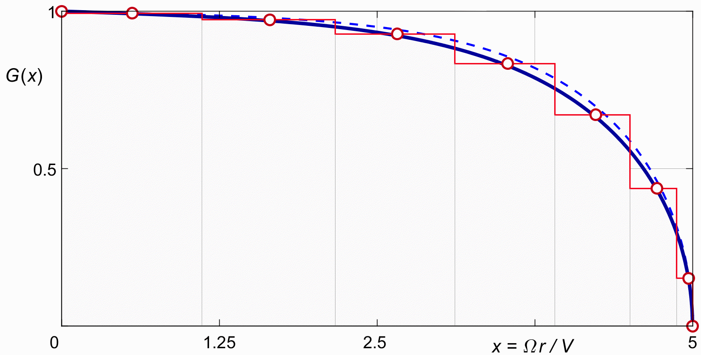
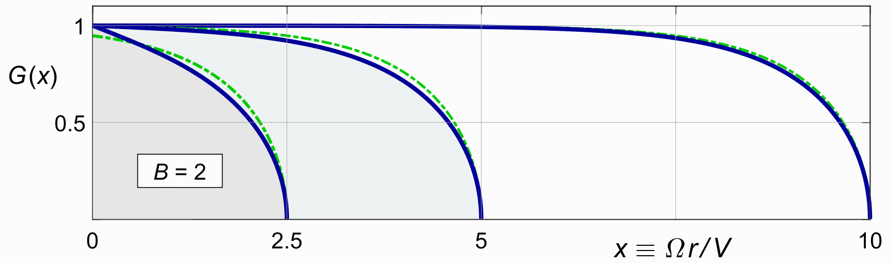
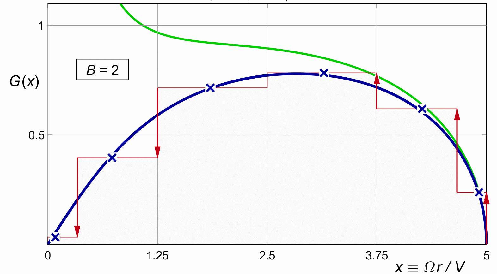

VORTEX THEORY
In the wing, we found that the optimal downwash distribution is a constant. For the propeller, we know that this is not the case. The optimum propwash ( more precisely, the optimal axial induction ) follows Betz's cos2φ pattern for minimal rotational loss, possibly modified by an extra linear term for minimal viscous loss.
However, it is interesting first to explore the Lerbs solution and the tip loss, for a propeller of constant propwash without the Betz, correction. This makes for a more direct comparison to the ( multiplane ) wing, and in fact to Prandtl's approximation for the tip loss.
For a propeller of constant propwash, all we have to do is apply (24.8) to a column vector of 1's representing the ( discretized ) desired propwash :
| (25.1) |
Here "1" is the vector of ones of the appropriate length, possibly extended with the extra zero from figure 24.4.
Figure 25.1 shows the result for our standard example of B = 2, X = 5. The graph is very similar to figure 21.4 for the Prandtl tip for the same case.

Figure 25.1 : The Lerbs solution for uniform induction. B = 2, X = 5, N = 1000. Crosses for N = 6.
Like in the wing, the outcomes for N = 6, or even N = 4, are already nearly on the line for "infinitely many" points. This is not proof that the result is accurate, but it does give some confidence.
Figure 25.2 shows the comparison to Prandtl's tip for a few other values of the tip speed ratio X. The only real difference is near the root. The Lerbs solution always goes to 1 there.
Since the induction is a constant, by Newton's law of (4.7) the effective mass distribution has the same shape as the thrust distribution. This fits with our earlier interpretation of Prandtl's tip approximation as a mass factor.
The result thus matches Prandtl's model very nicely. We will see in the next section that this likeness is lost near the root of the blade, as soon as we apply Betz's cos2φ condition for minimal rotational loss.

Figure 25.1 :
The Lerbs solution for uniform induction
compared to Prandtl (dashed).
Also compare to Prandtl figure 21.6.
The case of constant induction may or may not be of interest in wind turbines.
In windmills, a different Betz optimum applies, which has nothing to do with rotation. This "other" Betz condition states that the actuator disk must reduce the incoming wind velocity to ⅓ of its original value, for maximum energy extraction. If we assume that this also holds for every individual ring of the rotor disk, then this is in fact a condition of constant induction.
There will be less efficiency near the center, but it is not clear that it would be possible to move thrust away from this region towards more optimal, outboard radii.
The tip "loss" however, and therefore the optimal elliptical tip shape, is the same in the wind turbine as it is for the propeller, since it is not a loss as such, but only a factor on the mass flow that receives the optimal induction. And this is no different in a windmill than it is in a propeller.
This would seem to indicate that unlike propellers, optimal wind turbines should have a concentrated root vortex. In practice, keeping a finite thrust right down to the core would lead to infinite blade chords there, and so the discussion may be of academic interest only. At any rate, the main theoretical issue in the wind turbine is the extremely high loading, which leads to radial flows and pressure gradients and massive wake expansion ( the opposite of the wake contraction in a propeller, which are not covered in the present text.
The other difference with the propeller is that the viscous loss of (16.8) is upside-down in the windmill ( as it is in a backdriven leadscrew ), and therefore the "self locking" region in figure 16.3 is at the other end of the graph. It is in the tip region near φ = 0°, and not at the root near φ = 90°. Pitch angles less than the glide ratio of the blade section will give negative torque near the tip.
This makes the optimal tip speed ratio of the windmill smaller than that of the propeller.
We now apply the discrete vortex solution to the rotationally optimal propeller. This is a simple matter of applying (24.8) to the rotationally optimal distribution for the axial induction :
| (25.2) |
This φ is not the cosine parameter of (24.5), but the local pitch angle of (2.7).
TODO Transform to xw to avoid φ.
Figure 25.3 shows the result for our standard example of B = 2, X = 5. This the equivalent of the combination of the cos2 φ distribution with Prandtl's tip in figure 22.2.
| (25.3) |

Figure 25.3 :
G(x) for cos2φ induction.
B = 2, X = 5.
Line for N = 1000, crosses for N = 6.
Mass factor K(x) shown in green.
There is a qualitative difference between the two solutions, which already surprised Glauert. The Prandtl solution always preserves the curved start of the cos2φ function from figure 10.1. The Goldstein vortex solution, as calculated here by the Lerbs method, has a linear start, at least for low blade counts ( up to four ). The mass flow ratio follows from Newton's law as per (XXXXXXXXXXXXXXXXX), repeated here for the propeller :
If T starts linearly in x, and w starts quadratically ( by the cos2 φ, then the mass flow will start from the origin as 1 / x. It will become infinite at x = 0. This is one way of saying that near the axis, no amount of axial thrust will give any axial induction.
Goldstein gave mathematical models for the mass term K(x) near the x = 0 at infinite pitch for several blade counts, but these are purely mathematical, and they give nophu=yscialinsight.. Figure 25.3 shows K(x) as computed by (XXXXXXXXXX) from the Lerbs solution. It matches Goldstein's tables, but it is not pretty. Fortunately, we do not need K(x) explicitly in our calculations. These give G(x) directly.
The difference near the origin between the clean, Goldstein-like mass factor for the case of constant induction of figures 25.1 and 25.2 and the infinite "exact" mass factor in figure 25.3 is remarkable.
It already surprised Glauert. A physical explanation would still be welcome.
TBW.